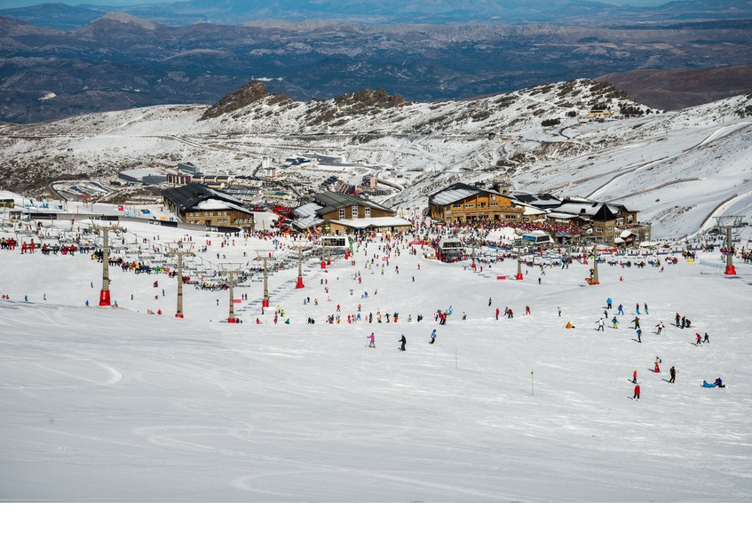

SIERRA NEVADA
Sierra Nevada es un macizo montañoso perteneciente al conjunto de las Cordilleras Béticas, concretamente al Sistema Penibético.
Es el macizo montañoso de mayor altitud de toda Europa occidental, después de los Alpes. Su altitud máxima se alcanza en el pico Mulhacén, de 3482 metros.
Tiene 131 pistas con 110,3 km esquiables junto a 21 remontes
Sierra Nevada es la estación a la que más veces he ido y desde mi punto de vista la mas divertida, lo único malo queq le veo es que al ser la única estación en el Sur está siempre a tope de gente.
Aparte de lo que es la estación, Sierra Nevada tiene una cantidad inmensa de actividades que hacer al cierre de las piestas como: bares, restaurantes, parques, cuestas de nieve, un bowl...
